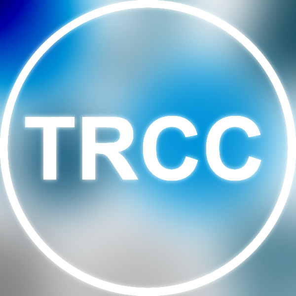

Herzlichen Glückwunsch!
Sie haben den Ein-Aus-Klapp-Knopf gefunden :)
Sie haben den Ein-Aus-Klapp-Knopf gefunden :)
Add-on zum Hören des Stream von TheRadio.CC.
Es wurden die fantastischen Schriftarten GitHub Octicons und Open Sans verwendet.
Quellcode u.ä. ist im GitHub Repo zu finden, dort können auch Bugs gemeldet werden.
Es wurden die fantastischen Schriftarten GitHub Octicons und Open Sans verwendet.
Quellcode u.ä. ist im GitHub Repo zu finden, dort können auch Bugs gemeldet werden.
Zu verwendende Suchmaschine:
- DuckDuckGo
Leertaste Play/Pause6 oder numblock / Mute7 oder numblock * Volume Max8 oder numblock - Volume -20%9 oder numblock + Volume +20%

Please check your internet connection